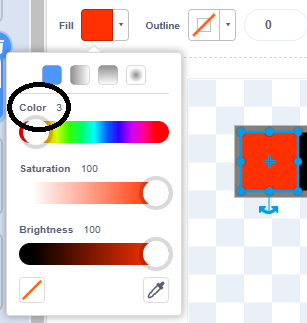
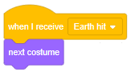

Introduction
At the end of the last module, if you clicked on an asteroid it would just disappear. That's not very 'juicy'.
The more a game reacts to your clicks and key presses, the more satisfying it is to play — the more juicy it is. In this module we will add juice by adding explosion effects.
Explosions
Load up the project you saved at the end of the last module.
Explosions need to know where they should be positioned on the stage. We'll use the same trick we used in the Particles module — add the x and y positions into a list and create a clone, then let the clone pull the x and y positions out of the list when it starts up.
Create a new List named EXPLOSION INFO (for all sprites).
Select the Asteroid sprite and add its x position and y position into this List when the sprite is clicked:

Be sure to clear out the list when the green flag is clicked:
Paint a new sprite called 'Explosion'.
Select the Circle tool, choose the Fill to be a radial gradient going from transparent at the centre to white at the edge and set the Outline thickness to 0. Draw a circle about 20 × 20 pixels and snap it to the centre:
Switch to the Explosion sprite's Code tab, add the usual hide-template-show-clone blocks, and let the clone set its position from the EXPLOSION INFO (remembering to delete the two items from the list after using them):
Switch to the Asteroid sprite and, when an asteroid is clicked, create an Explosion clone:
Click the green flag and click some asteroids. What happens?
How could we make the white ring expand outwards like an explosion?
Correct — this is the trick we used in the Echolocation module.
Switch to the Explosion sprite and add some code to do that. Also fade the ring out as it expands, and delete it once it's finished:
Click the green flag and click some asteroids. What happens?
Good. Now let's make the game look even more beautiful by adding some stars.
Stars
Paint a new sprite named 'Stars'. Switch straight to the Code tab — we don't need any costumes for this.
At the bottom left of the screen, click on the 'Add Extension button':
Select the Pen extension:
The Pen extension is a powerful tool. It lets you draw using code, which means it will very quickly draw something that would take you hours.
When the green flag is clicked we want to erase all, so we start from a clean slate. Then we want to set the pen colour to white, and the pen size to 1:
We're going to paint lots of stars, in a repeat-loop, which could be very slow. How could we make it faster?
Make a Block, named 'Paint stars', and add an input (number or text) named num stars and another input (number or text) named brightness:
In its definition, repeatedly move the pen to a random position and make a dot there, by touching the pen down then lifting the pen up:
(Note: if we moved while the pen was down, we would draw a line. We might explore that in a later module.)
Call that Block after setting up the pen colour and size, passing in 100 for num stars and 100 for brightness:

Click the green flag. What happens?
Next time you go star-gazing, look closely at the night sky and you will see that there are a few very bright stars, more medium-bright stars, and lots of very faint ones.
Let's make our starry background more realistic. Firstly, we created a brightness input in our Block but then ignored it — let's fix that:
A brightness of 100 means 'full brightness'. Add code to paint 300 stars with half brightness (that is, 50) and 1,000 stars with a quarter brightness (that is, 25):
Click the green flag. Does the starry background look more realistic?
It would have taken you ages to draw that many stars by hand.
There are lots more beautiful images you can create using the Pen extension. Now that you've seen some things it can do, feel free to explore it further in your own projects.
We need to move on to the health bar.
Health bar
Many games would be frustrating if they ended the first time you were hit, so the 'health bar' was invented. You start with full health, you're allowed to be hit a few times, each time you 'take some damage' and the bar shows how much health you have left — often turning from green to yellow to red as you run out.
Paint a new sprite named 'Health'. Select the Rectangle tool, a black Fill colour, and a grey Outline colour with a thickness of 2.
Zoom in and draw a rectangle 10 chequered squares wide by 2 chequered squares tall, snapped to the centre:
Duplicate this costume until there are 11 of them.
Do your costumes run from costume1 to costume11?
Leave the last costume, costume11, as it is — an empty health bar.
Select the one above it, costume10, and paint a red rectangle, one chequered square wide, starting at the left:

Copy and paste that red rectangle into the costume above, costume9, and drag its right edge until it's two chequered squares wide.
Keep copying and pasting that rectangle from costume to costume, dragging it so that it's three chequered squares wide in costume8, four in costume7, and so on, until you have a full health bar in costume1.
Now we need to fix up the colours. Go down to costume10, select the red rectangle and ensure that the Fill colour is 0.
Select the red rectangle in costume9, and change its Fill colour to 3 (a slightly orangey-red):
In costume8...
...change it to 6...
... in costume7...
... change it to 9...
... and so on...
... increasing the colour by 3 as you work up the list of costumes.
You should end up...
... with the first costume...
... the 'full health' costume...
...having the colour 27...
... a nice vibrant green...
... see the image on the right:
Do your health bar costumes blend smoothly from green to red?
Switch to the Code tab. When the green flag is clicked, set the costume to costume1, that is, full health:
When the Earth is hit, we want to switch to the next costume. Add some code for that:
Which sprite knows when to broadcast the 'Earth hit' message?
The Asteroid sprite has a script that repeatedly moves its clones until they touch Earth. When that repeat loop ends, an asteroid has hit Earth. Broadcast the 'Earth hit' message at that point:
Position the health bar just underneath Earth:
Click the green flag. When the first few asteroids hit Earth, what happens?
What happens when the health bar is empty, and then an asteroid hits Earth?
Costumes 'wrap around'. If you're on the last costume, and you say next costume, you'll get the first costume again.
We should end the game if the Earth runs out of health. If that happens, broadcast 'Game over':
Notice that, in the above screenshot, I'm detecting when Earth has run out of health by seeing if I'm on the 11th costume. You might find it clearer to see if you're on the costume named 'costume11'. There is a subtle difference — matching on costume number means this script will break if I add or remove any of the current costumes... matching on costume name means it will break if I rename the costume. You should decide which is safer.
We need the asteroids to stop when the game is over. Add some code for that:
While we're working on the Asteroid sprite, add some code to create explosions when the Earth is hit:
Click the green flag and let the asteroids hit Earth. What happens?
Let's add a finishing touching — a 'Game over' message when the game ends.
Game over
Paint a new sprite, naming it 'Game over'.
In the Costumes tab, select the Text tool, a white Fill colour, and click in the middle of the drawing area.
Type in GAME OVER then select the Select tool and snap it to the centre. It might be hard to see the white text against the chequered background of the drawing area, but you can see it on the Stage, and you should drag it to a good position, maybe near the bottom:
Switch to the Code tab, and add some code that:
- sets the ghost effect to 100 when the green flag is clicked
- repeatedly decreases the ghost effect when the game is over
What will the above code do?
This is called a 'fade in'.
Click the green flag and let the asteroids hit Earth. Does the Game over text fade into view?
Great. Click the full screen button, click the green flag, and see how much cash you can earn before the game ends.
Next steps
Save your project.
In the next few modules we will:
- make a 'turret' to automatically shoot asteroids
- create a shop for buying extra turrets
Feel free to try out any of those ideas beforehand, or to try a different idea of your own instead.
What did you think of this module?
I didn't like it

It was OK

I loved it